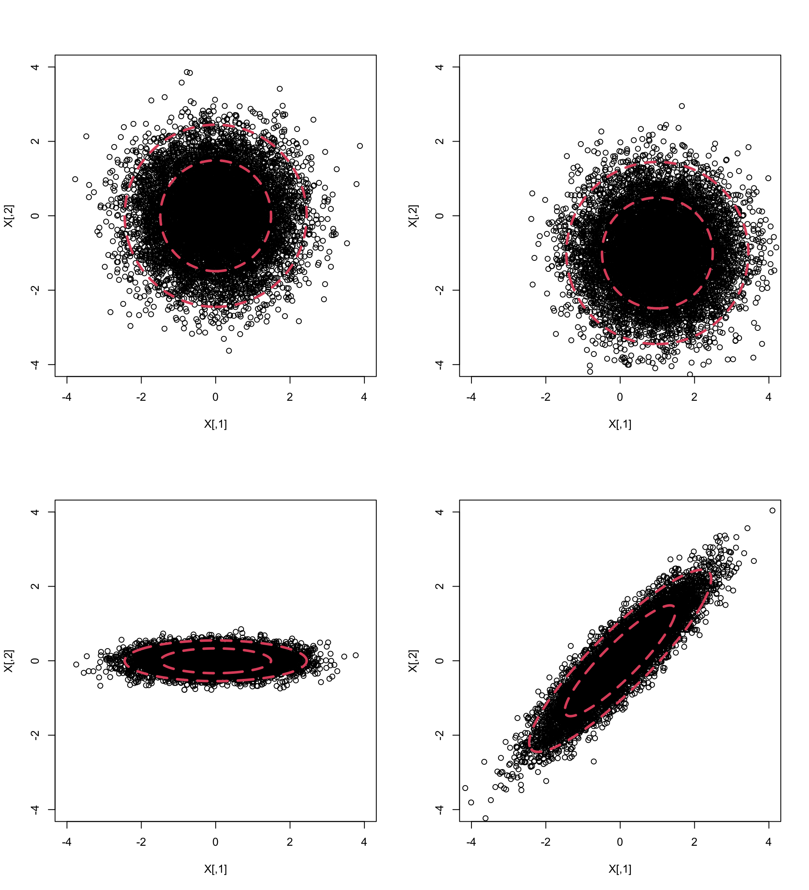
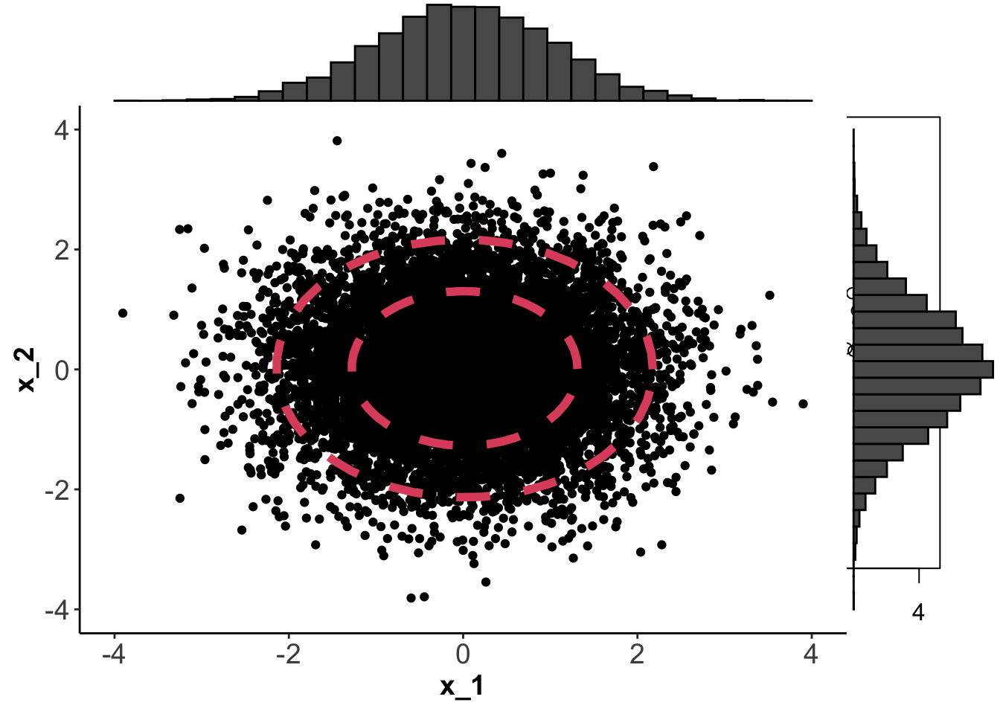

7.1 Definition and Properties of the MVN
7.1.1 Basics
In particular, note that the marginal distribution of each element of \(\mathbf x\) has a uni-variate Gaussian distribution.
Notation: If \(\mathbf x\in \mathbb{R}^p\) is MVN with mean \({\boldsymbol{\mu}}\in \mathbb{R}^p\) and covariance matrix \(\boldsymbol{\Sigma}\in \mathbb{R}^{p\times p}\) then we write \[ \mathbf x\sim N_p ({\boldsymbol{\mu}}, \boldsymbol{\Sigma}).\]
If \(p=1\), so that \(\mathbf x= x\), \({\boldsymbol{\mu}}= \mu\) and \(\boldsymbol{\Sigma}= \sigma^2\), say, then the pdf simplifies to \[\begin{eqnarray*} f(\mathbf x) &=& \frac{1}{|2 \pi \sigma^2|^{1/2}} \exp \left(-\frac{1}{2}(x - \mu) (\sigma^2)^{-1} (x - \mu) \right)\\ &=& \frac{1}{(2 \pi \sigma^2)^{1/2}} \exp \left(-\frac{1}{2 \sigma^2}(x - \mu)^2 \right) \end{eqnarray*}\] which is the familiar pdf of the univariate normal distribution \(N(\mu,\sigma^2)\).
If \(p>1\) and \(\boldsymbol{\Sigma}= \operatorname{diag}(\sigma_1^2, \ldots, \sigma_p^2)\) then \[\begin{eqnarray*} f(\mathbf x) &=& \frac{1}{((2 \pi)^{p}\prod_{i=1}^p \sigma_i^2)^{1/2}} \exp \left(-\frac{1}{2}(\mathbf x- {\boldsymbol{\mu}})^\top \boldsymbol{\Sigma}^{-1}(\mathbf x- {\boldsymbol{\mu}}) \right)\\ &=& \frac{1}{(2 \pi)^{p/2}\prod_{i=1}^p \sigma_i} \exp \left(-\frac{1}{2} \sum_{i=1}^p \frac{(x_i - \mu_i)^2}{\sigma_i^2} \right)\\ &=& \left(\frac{1}{\sqrt{2 \pi\sigma_1^2}} \exp \left(-\frac{1}{2\sigma_1^2} (x_1 - \mu_1)^2 \right)\right)\\ && \qquad \qquad \times \ldots \left(\frac{1}{\sqrt{2 \pi \sigma_p^2}} \exp \left(-\frac{1}{2\sigma_p^2} (x_p - \mu_p)^2 \right)\right) \end{eqnarray*}\] Thus, by the factorisation theorem for probability densities, the components of \(\mathbf x\) have independent univariate normal distributions: \(x_i \sim N(\mu_i, \sigma_i^2)\).
If \(p=2\) we can plot \(f(\mathbf x)\) using contour plots. Below, I’ve generated 1000 points from four different normal distributions using mean vectors \[{\boldsymbol{\mu}}_1={\boldsymbol{\mu}}_3={\boldsymbol{\mu}}_4=\begin{pmatrix}0 \\0 \\\end{pmatrix}, \quad {\boldsymbol{\mu}}_2=\begin{pmatrix}1 \\-1 \\\end{pmatrix}\] and covariance matrices \[\boldsymbol{\Sigma}_1=\boldsymbol{\Sigma}_2=\begin{pmatrix}1&0 \\0&1 \\\end{pmatrix}, \quad \boldsymbol{\Sigma}_3=\begin{pmatrix}1&0 \\0&0.05 \\\end{pmatrix}, \quad \boldsymbol{\Sigma}_4=\begin{pmatrix}1&0.9 \\0.9&1 \\\end{pmatrix}.\]

Note that the top left and bottom right plots have the same marginal distribtions for components \(x_1\) and \(x_2\), namely \[x_1 \sim N(0, 1)\quad x_2 \sim N(0, 1)\]

The contours on each plot are obtained by finding values of \(\mathbf x\) for which \(f(\mathbf x)=c\). The constant \(c\) is chosen so that the the shapes (which we’ll see below are ellipses) enclose 66% and 95% of the data.
7.1.2 Transformations
Proof. Let \(\mathbf b\in \mathbb{R}^q\) be a constant vector. Then \[ \mathbf b^\top \mathbf y= \mathbf b^\top \mathbf A\mathbf x+ \mathbf b^\top \mathbf c= \mathbf a^\top \mathbf x+ \mathbf b^\top \mathbf c\] where \(\mathbf a^\top = \mathbf b^\top \mathbf A\). Now \(\mathbf a^\top \mathbf x\) is univariate normal for all \(\mathbf a\) since \(\mathbf x\) is MVN. Therefore \(\mathbf b^\top \mathbf y\) is univariate normal for all \(\mathbf b\), so \(\mathbf y\) is MVN.
We can compute \({\mathbb{E}}(\mathbf y)=\mathbf A{\boldsymbol{\mu}}+\mathbf c\) and \({\mathbb{V}\operatorname{ar}}(\mathbf y)=\mathbf A\boldsymbol{\Sigma}\mathbf A^\top\) using the properties listed in Section 1.3.
This implies that a linear transformation of a MVN random variable is also MVN. We can use this result to prove two important corollaries. The first corollary is useful for simulating data from a general MVN distribution.
Proof. Apply 7.1 with \(\mathbf A= \boldsymbol{\Sigma}^{1/2}\) and \(\mathbf c= {\boldsymbol{\mu}}\). Therefore \[{\mathbb{E}}(\mathbf y) = \boldsymbol{\Sigma}^{1/2} \boldsymbol 0_p + {\boldsymbol{\mu}}= {\boldsymbol{\mu}}\quad \mbox{and}\quad {\mathbb{V}\operatorname{ar}}(\mathbf y) = \boldsymbol{\Sigma}^{1/2} \mathbf I_p \boldsymbol{\Sigma}^{1/2} = \boldsymbol{\Sigma}.\]
The second corollary says that any MVN random variable can be transformed into standard form.
\[\mathbf y= \boldsymbol{\Sigma}^{-1/2}(\mathbf x- {\boldsymbol{\mu}}) \sim N_p(\boldsymbol 0,\mathbf I_p).\]
Proof. Apply Proposition 7.1 with \(\mathbf A= \boldsymbol{\Sigma}^{-1/2}\) and \(\mathbf c= - \boldsymbol{\Sigma}^{-1/2} {\boldsymbol{\mu}}\).
7.1.3 Independence
Proof. The joint distribution of \(\mathbf x\) and \(\mathbf y\) can always be factorized as \[p(\mathbf x, \mathbf y)= p(\mathbf x)p(\mathbf y|\mathbf x).\] If the conditional distribution for \(\mathbf y\) given \(\mathbf x\) does not depend upon \(\mathbf x\), i.e., if \(p(\mathbf y| \mathbf x)=p(\mathbf y)\), then \(\mathbf y\) and \(\mathbf x\) are independent.
Suppose \(\mathbf x\sim N_p({\boldsymbol{\mu}}_\mathbf x, \boldsymbol{\Sigma}_{\mathbf x,\mathbf x})\) and \(\mathbf y\sim N_p({\boldsymbol{\mu}}_\mathbf y, \boldsymbol{\Sigma}_{\mathbf y,\mathbf y})\) are jointly normally distributed and that they are uncorrelated. Thus we can write \[\begin{pmatrix}\mathbf x\\ \mathbf y\end{pmatrix}\sim N_{p+q}\left({\boldsymbol{\mu}}, \boldsymbol{\Sigma}\right) \] where \[{\boldsymbol{\mu}}= \begin{pmatrix}{\boldsymbol{\mu}}_\mathbf x\\ {\boldsymbol{\mu}}_{\mathbf y}\end{pmatrix}\quad \boldsymbol{\Sigma}= \begin{pmatrix} \boldsymbol{\Sigma}_{\mathbf x, \mathbf x} &\boldsymbol 0_{p,q}\\ \boldsymbol 0_{q,p} & \boldsymbol{\Sigma}_{\mathbf z, \mathbf z}\end{pmatrix}.\]
Now \[\begin{align*} p(\mathbf y|\mathbf x)&=\frac{p(\mathbf x, \mathbf y)}{p(\mathbf x)}\\ &\propto \frac{\exp\left(-\frac{1}{2}(\mathbf x-{\boldsymbol{\mu}}_\mathbf x)^\top \boldsymbol{\Sigma}_{\mathbf x,\mathbf x}(\mathbf x-{\boldsymbol{\mu}}_\mathbf x) -\frac{1}{2}(\mathbf y-{\boldsymbol{\mu}}_\mathbf y)^\top \boldsymbol{\Sigma}_{\mathbf y,\mathbf y}(\mathbf y-{\boldsymbol{\mu}}_\mathbf y)\right)}{\exp\left(-\frac{1}{2}(\mathbf x-{\boldsymbol{\mu}}_\mathbf x)^\top \boldsymbol{\Sigma}_{\mathbf x,\mathbf x}(\mathbf x-{\boldsymbol{\mu}}_\mathbf x)\right)} \\ &\propto \exp\left(-\frac{1}{2}(\mathbf y-{\boldsymbol{\mu}}_\mathbf y)^\top \boldsymbol{\Sigma}_{\mathbf y,\mathbf y}(\mathbf y-{\boldsymbol{\mu}}_\mathbf y)\right) \\ &\propto p(\mathbf y) \end{align*}\] So \(p(\mathbf y|\mathbf x)=p(\mathbf y)\), i.e. \(p(\mathbf y|\mathbf x)\) is not a function of \(\mathbf x\), and thus \(\mathbf x\) and \(\mathbf y\) are independent.
Proposition 7.2 means that zero correlation implies independence for the MVN distribution. This is not true in general for other distributions.
Note: It is important that \(\mathbf x\) and \(\mathbf y\) are jointly multivariate normal. For example, suppose \(x \sim N(0, 1)\). Let \[z=\begin{cases} 1 \mbox{ with probability } \frac{1}{2}\\ -1 \mbox{ otherwise} \end{cases} \] and let \(y=zx\). Then clearly \(y\) is also a normal random variable: \(y \sim N(0,1)\). In addition, note that \[{\mathbb{C}\operatorname{ov}}(x,y)= {\mathbb{E}}(xy)= {\mathbb{E}}(x^2){\mathbb{E}}(z)=0\] so that \(x\) and \(y\) are uncorrelated.
However, \(x\) and \(y\) are clearly not independent: if you tell me \(x\), then I know \(y=x\) or \(y=-x\).
7.1.4 Confidence ellipses
The contours in the plots of the bivariate normal samples shown above are ellipses. They were defined to lines of consant density, i.e., by \(f(\mathbf x)=c\), which implies
\[\begin{equation} (\mathbf x- {\boldsymbol{\mu}})^\top \boldsymbol{\Sigma}^{-1} (\mathbf x- {\boldsymbol{\mu}})=c' \tag{7.1} \end{equation}\] for some constant \(c'\). To see that this is the equation of an ellipse, note that a standard ellipse in \(\mathbb{R}^2\) is given by the equation \[\begin{equation} \frac{x^2}{a^2}+\frac{y^2}{b^2}=1 \quad (a, b>0) \tag{7.2} \end{equation}\] and recall that a standard ellipse has axes of symmetry given by the \(x\)-axis and \(y\)-axis (if \(a>b\), the \(x\)-axis is the major axis, and the \(y\)-axis the minor axis). For example, \(a=10, b=3\) gives the ellipse:
If we define \({\mathbf A}=\left( \begin{array}{cc} a^2&0\\ 0&b^2 \end{array} \right)\) and write \({\mathbf x}=\binom{x}{y}\), then Equation (7.2) can be written in the form \[ \mathbf x^\top {\mathbf A}^{-1}\mathbf x=c'. \] To shift the centre of the ellipse from the origin to the point \({\boldsymbol{\mu}}\) we modify the equation to be \[ (\mathbf x-{\boldsymbol{\mu}})^\top {\mathbf A}^{-1}(\mathbf x-{\boldsymbol{\mu}}) =c'.\]
What if instead of using a diagonal matrix \(\mathbf A\), we use a non-diagonal matrix \(\boldsymbol{\Sigma}\) as in Equation (7.1)? If \(\boldsymbol{\Sigma}\) has spectral decomposition \(\boldsymbol{\Sigma}= \mathbf V\boldsymbol \Lambda\mathbf V^\top\), then \[\begin{align*} (\mathbf x-{\boldsymbol{\mu}})^\top {\boldsymbol{\Sigma}}^{-1}(\mathbf x-{\boldsymbol{\mu}}) &= (\mathbf x-{\boldsymbol{\mu}})^\top \mathbf V\boldsymbol \Lambda^{-1}\mathbf V^\top(\mathbf x-{\boldsymbol{\mu}}) \\ &= \mathbf y^\top \boldsymbol \Lambda^{-1}\mathbf y\\ &= \frac{y_1^2}{\lambda_1}+\frac{y_2^2}{\lambda_2} \end{align*}\] where \(\boldsymbol \Lambda=\operatorname{diag}(\lambda_1, \lambda_2)\) is a diagonal matrix of eigenvalues, and \(\mathbf y= \mathbf V^\top (\mathbf x-\mathbf u)\). Because \(\mathbf V\) is an orthogonal matrix (a rotation), we can see that this is the equation of a standard ellipse when using the eigenvectors as the coordinate system. Or in other words, it is an ellipse with major axis given by the first eigenvector, and minor axis given by the second eigenvector, centered around \({\boldsymbol{\mu}}\).
Analogous results for ellipsoids and quadratic forms hold in three and higher dimensions.
The term \((\mathbf x-{\boldsymbol{\mu}})^\top \boldsymbol{\Sigma}^{-1} (\mathbf x-{\boldsymbol{\mu}})\) will be important later in the chapter. The following proposition gives its distribution:
Proof. Define \(\mathbf y= \boldsymbol{\Sigma}^{-1/2} (\mathbf x-{\boldsymbol{\mu}})\) so \[\begin{align*} (\mathbf x-{\boldsymbol{\mu}})^\top \boldsymbol{\Sigma}^{-1} (\mathbf x-{\boldsymbol{\mu}}) &= \left(\boldsymbol{\Sigma}^{-1/2} (\mathbf x-{\boldsymbol{\mu}}) \right)^\top \left(\boldsymbol{\Sigma}^{-1/2} (\mathbf x-{\boldsymbol{\mu}}) \right)\\ &= \mathbf y^\top \mathbf y= \sum_{i=1}^p y_i^2 \end{align*}\] By Corollary 7.2, \(\mathbf y\sim N_p (\boldsymbol 0, \mathbf I_p)\), and so the components of \(\mathbf y\) have independent univariate normal distributions with mean 0 and variance 1. Recall from univariate statistics that if \(z \sim N(0,1)\) then \(z^2 \sim \chi^2_1\) and if \(z_1, \ldots, z_n\) are iid \(N(0,1)\) then \(\sum_{i=1}^n z_i^2 \sim \chi_n^2\). It therefore follows that \[\sum_{i=1}^p y_i^2 \sim \chi^2_p.\]
Proposition 7.3 means we can calculate the probability \[{\mathbb{P}}\left((\mathbf x-{\boldsymbol{\mu}})^\top \boldsymbol{\Sigma}^{-1} (\mathbf x-{\boldsymbol{\mu}})<k\right),\] which is the probability of \(\mathbf x\) lying within a particular ellipsoid. We often use this to draw confidence ellipses, which are ellipses that we expect to contain some specified proportion of the random samples (95% say).
7.1.5 Sampling results for the MVN
In this section we present two important results which are natural generalisations of what happens in the univariate case.
Proof. From Proposition 7.1 we can see that if \(\mathbf x_1, \ldots, \mathbf x_n \sim N_p({\boldsymbol{\mu}}, \boldsymbol{\Sigma})\) then \(\bar{\mathbf x} \sim N_p ({\boldsymbol{\mu}}, n^{-1}\boldsymbol{\Sigma})\). Let \(\mathbf y_i = \mathbf x_i -\bar{\mathbf x}\). Then \[\begin{align*} {\mathbb{C}\operatorname{ov}}(\bar{\mathbf x},\mathbf y_i)&={\mathbb{C}\operatorname{ov}}(\bar{\mathbf x}, \mathbf x_i -\bar{\mathbf x})\\ &={\mathbb{C}\operatorname{ov}}(\bar{\mathbf x}, \mathbf x_i) - {\mathbb{C}\operatorname{ov}}(\bar{\mathbf x}, \bar{\mathbf x})\\ &=n^{-1}\sum_{j=1}^n \left \{{\mathbb{E}}[(\mathbf x_j -{\boldsymbol{\mu}})(\mathbf x_i-{\boldsymbol{\mu}})^\top]\right \}\\ & \qquad \qquad -{\mathbb{E}}[(\bar{\mathbf x}-{\boldsymbol{\mu}})(\bar{\mathbf x}-{\boldsymbol{\mu}})^\top]\\ &=n^{-1}\boldsymbol{\Sigma}- n^{-1}\boldsymbol{\Sigma}\\ &= {\mathbf 0}_{p,p}. \end{align*}\] Thus Proposition 7.2 gives that \(\bar{\mathbf x}\) and \(\mathbf y_i\) are independent, and therefore \(\bar{\mathbf x}\) and \[ \mathbf S=\frac{1}{n}\sum_{i=1}^n \mathbf y_i \mathbf y_i^\top =n^{-1}\sum_{i=1}^n (\mathbf x_i -\bar{\mathbf x})(\mathbf x_i -\bar{\mathbf x})^\top \] are independent.
Recall from above that if \(\mathbf x_1, \ldots, \mathbf x_n\) is a random sample from \(N_p({\boldsymbol{\mu}}, \boldsymbol{\Sigma})\) then \[\bar{\mathbf x} \sim N_p ({\boldsymbol{\mu}}, \frac{1}{n}\boldsymbol{\Sigma}).\] This result is also approximately true for large samples from non-normal distributions, as is now stated in the multivariate central limit theorem.
Proof. Beyond the scope of this module.